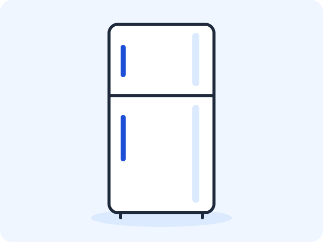

Учебный вариант 00 — пара 10
Это постоянный пример преподавателя, который студентам не назначается. Задание пары 10: в папке Variant00-web создать index.html — обычную страницу с текстом и одной картинкой сверху вниз. Данные этого этапа приведены здесь целиком.
| Данные | Значение и место в HTML |
|---|---|
| Название приложения | Техника дома · V00 — title и h1 |
| Короткое пояснение | Выберите технику для повседневных дел — первый p |
| Заголовок главной | Бытовая техника для дома — h2 |
| Описание | Три прибора для кухни и дома. Сравните характеристики и выберите нужный товар. — второй p |
| Изображение | images/fridge.svg, alt="Холодильник", ширина 240 |
Готовая отдельная иллюстрация fridge.svg для копирования в images:
Сохранение изображения: скачанный 010-00-fridge.svg назовите fridge.svg и сохраните в своей папке images, как указано в задании.

Проверьте название во вкладке, четыре текстовые части и картинку. Затем измените один абзац в файле, сохраните и обновите браузер: изменение должно появиться. Пошаговое выполнение находится в объяснении пары по ссылке в конце листа.
Вернуться к объяснению пары 10.